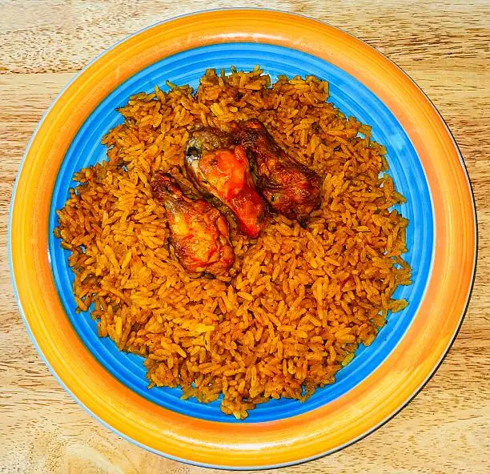

Home
Recipe for Jollof Rice

Description
Jollof rice is a popular West African dish made with rice, tomatoes,
and a blend of spices.
It's often served with grilled meat or fish and is a staple at many traditional gatherings.
Ingredients
- 1 cup long-grain rice
- 2 tablespoons vegetable oil
- 1 large onion, diced
- 3 cloves garlic, minced
- 1 inch fresh ginger, minced
- 2 tablespoons tomato paste
- 1 teaspoon curry powder
- 1 teaspoon cumin
- 1/2 teaspoon black pepper
- 1/2 teaspoon salt
- 1 cup chicken broth
- 1 cup diced tomatoes
Procedures
- Rinse the rice under cold water until the water runs clear. Set aside.
- Heat the vegetable oil in a large pot over medium heat. Add the diced onion and sauté until translucent.
- Add the minced garlic and ginger, and cook for another minute until fragrant.
- Stir in the tomato paste, curry powder, cumin, black pepper, and salt. Cook for 2-3 minutes to allow the spices to bloom.
- Add the diced tomatoes and chicken broth. Bring to a simmer.
- Add the rinsed rice to the pot, stirring to combine. Reduce the heat to low, cover, and let it cook for about 20-25 minutes, or until the rice is tender and has absorbed the liquid.
- Fluff the rice with a fork before serving. Enjoy your Jollof rice with your choice of protein or vegetables!